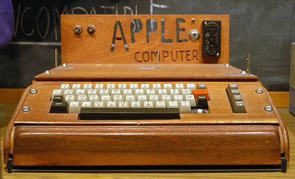
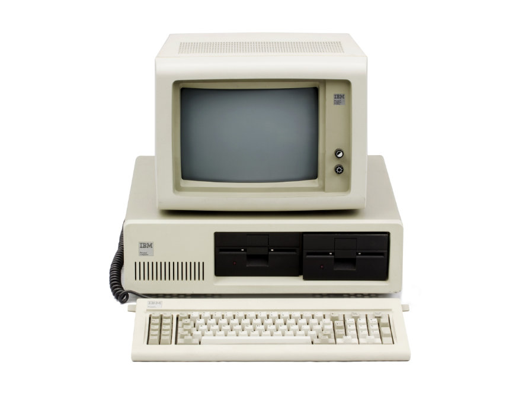

Early Computing of Apple & Microsoft
The computers that everyone knows today weren’t as simple as the ones fifty to sixty years ago. Years ago, computers were used differently; from an ENIAC( Electronic Numerical Integrator And Computer) that could only solve numerical problems to a multi-functional computer; the technological industry has evolved rapidly like no other. Apple and Microsoft companies have been the two dominating, and commonly known software companies since they were first started.
Apple

Apple was founded by three partners: Steve Jobs, Steve Wozniak, and Ronald Wayne on April 1st, 1976. Jobs and Wozniak debuted their prototype of the Apple I at their Homebrew Computer Club; the Apple I was a circuit-board designed by Wozniak, and explained in a manual by Wayne. It came with expandable 4k RAM and a display of 60.05 Hz (“Apple I” para. 2). Steve Jobs took charge of advertising the product by promoting to friends and family. A few years later, the group released the Apple II with a ram of 4k-48k, a stunning display of 280 X 192, with a price ranging from $1298-$2638. This was the first computer to have a color display in the late 1970’s.
Since 1976, Apple has created over 100 products from their revolutionary circuit board to the new Macbook; they’ve made over 200 billion dollars as of 2015. With the much well-deserved money earned, Apple graciously donates regularly to several charities and fundraisers including: Red Cross, China’s Flood Relief, Louisiana Flood Relief, World Wildlife Fund, Aids Day, etc. Apple has spent millions of dollars to make a change in someone’s life.
Microsoft
The Microsoft company was founded by Bill Gates (former Harvard dropout) and Paul Allen on April 4, 1975. Bill Gates dropped out of Harvard to join Paul Allen in January of 1975. Gate and Allen originally converted BASIC, a computer programming language for the early personal computer (Mark Hall “Microsoft Corporation”).The BASIC was originally known as the Altair BASIC; which was available on the Altair 8800 microcomputer. The microcomputer was sold by the designer Ed Roberts who predicted to sell only a few hundreds, yet he sold a couple thousands within the first month. This began to indicate the success of the Microsoft Company.
Over the next 15 years, the Windows system was a major player in the industry, due to the launch of the company’s MS-DOS( Microsoft Disk Operating System); a major part of the success had to do with their first disk operating system in July, 1980 and their first operating system on August 25, 1980 (Hall). On May 22, 1990, Microsoft launched Windows 3.0; the new version of Microsoft’s operating system with new features and improved ability for Intel 386 (Hall).
Over the last thirty years, there have been a handful of updated operating systems. These include Windows: 1.0, OS/2, XP, 3.0, 7, 8, 10, etc. Windows 1.0 was a graphical computer which did not meet the customer’s satisfaction, due to the poor performance when opening more than one application at a time. In 1990, Microsoft released Windows 3.0 which was more of a success due to its improved capabilities. 19 years later, Windows launched Windows 7, which had a more useful performance and processor. A year ago, the company released Windows 10; a multifunctional, safer, and reliable operating system. The newest operating systems runs on 350 million devices a day, due to its success.